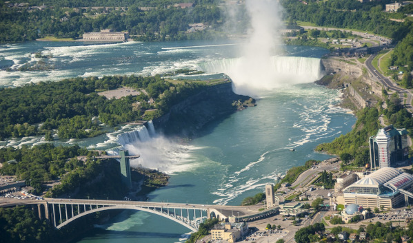
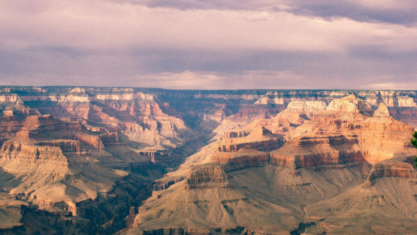
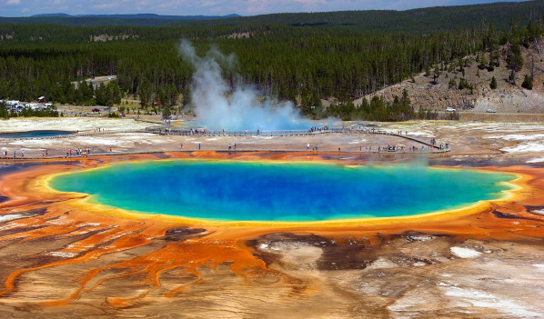

Estados Unidos: Um Mundo de Diversidade e Grandes Atrações
Os Estados Unidos da América, um país vasto e diversificado, é uma terra de contrastes e maravilhas que cativam viajantes de todo o mundo. Com uma extensão que abrange desde as montanhas geladas do Alasca até as praias ensolaradas da Flórida, os EUA oferecem uma variedade de paisagens, culturas e histórias que desafiam a imaginação e encantam a todos que o exploram. Desde as grandes metrópoles tecnológicas até as comunidades rurais que preservam tradições milenares, os Estados Unidos são um destino que oferece uma experiência de viagem única e inesquecível.
Viajar pelos EUA é uma jornada através de contrastes fascinantes. Você pode passear pelas ruas animadas de Nova York, explorar os parques nacionais do Grand Canyon e Yosemite, ou desfrutar de um mergulho nas águas cristalinas de Miami. A diversidade cultural e natural dos EUA oferece uma experiência enriquecedora, onde cada dia pode trazer novas descobertas e aventuras.
Documentação
Além de passaporte válido por pelo menos seis meses após a data de entrada nos EUA, realizar qualquer tipo de viagem para os Estados Unidos também é obrigatório ter visto, e saiba que o país é muito rigoroso com a documentação.
Não existe uma exigência de vacinas para viajar para os Estados Unidos, no entanto, vacinas contra gripe e febre amarela são recomendadas.
Moeda e câmbio
A moeda local é o Dólar Americano (USD).
Fazer a cotação do dólar e adquiri-lo antes da viagem é um dos cuidados básicos para não passar nenhum apuro em suas férias. Vale saber que é possível comprar a moeda americana em casas de câmbio ou até mesmo em bancos. Além disso, uma medida de segurança é solicitar a utilização do cartão internacional em seu banco, já que as principais bandeiras de cartão de crédito são aceitas nos Estados Unidos.
Idioma
O inglês é a língua oficial, mas muitos americanos falam outros idiomas, especialmente em áreas urbanas.
Quando ir aos Estados Unidos
Essa é uma pergunta que não tem resposta definitiva. O país é enorme, tem diferentes climas e, portanto, uma melhor época para visitar cada região. Além disso, em alguns lugares as estações são bem definidas, faz bastante frio no inverno e bastante calor no verão, então cada época do ano oferecerá uma experiência diferente.
Uma informação importante e essencial para ter em mente é que as estações nos Estados Unidos são o inverso do Brasil, já que o país está no hemisfério Norte. Ou seja, quando é verão no Brasil, é inverno nos Estados Unidos e vice versa. Sendo assim, em boa parte das cidades estadunidenses, você encontrará calor ao viajar em meses como junho, julho e agosto, e frio viajando em dezembro, janeiro e fevereiro.
É importante avaliar o clima da cidade que você deseja visitar para entender quando ir a esse lugar. Na Flórida, por exemplo, onde ficam Orlando e Miami, faz muito calor ao longo do ano e não faz muito frio, mesmo no inverno. Já em Nova York, faz bastate frio e neva no inverno.
8 Melhores Pontos Turísticos dos Estados Unidos para conhecer
1. Estátua da Liberdade
Sem dúvidas, um dos pontos turísticos dos Estados Unidos mais famosos e imperdíveis é a Estátua da Liberdade, símbolo da democracia desde 1886.
O monumento mais conhecido de Nova York foi um presente do governo francês para os EUA e atrai milhões de visitantes todos os anos.
A estátua fica em uma posição estratégica e pode ser contemplada de diversos ângulos ao longo da costa da cidade.
2. Golden Gate Bridge
A Ponte Golden Gate é um dos maiores orgulhos de São Francisco, na Califórnia, e uma atração turística imperdível.
A estrutura, inaugurada em 1937, fica a quase 230 metros (ou 65 andares) acima do mar e é frequentemente retratada em filmes e séries.
Essa obra-prima arquitetônica conecta a cidade de São Francisco a Sausalito, na Califórnia continental, e chama a atenção com suas torres alaranjadas. Uma atração incrível da Costa Oeste!
3. Times Square
Fonte: Pixabay
Não seria exagero afirmar que a Times Square, o coração pulsante de Nova York, está entre as atrações mais famosas do mundo.
Seu cenário de luzes coloridas e movimento intenso a qualquer hora do dia já foi imortalizado em incontáveis produções de cinema e TV.
A Times Square fica no coração de Manhattan e é uma verdadeira meca de entretenimento e cultura.
A região é rodeada pelos teatros da Broadway, lojas de marcas mundialmente famosas e outras atrações.
4. Empire State Building
Fonte: Pixabay
O Empire State Building, com seus 102 andares, já foi considerado o prédio mais alto do planeta, e é um símbolo da cidade de Nova York.
Há um observatório no 86º andar, que oferece uma vista panorâmica da cidade.
Os visitantes também podem conferir galerias com exposições sobre a construção do edifício e um museu interativo.
5.Cataratas do Niágara

Você não vai se arrepender de visitar as majestosas Cataratas do Niágara, na fronteira com o Canadá.
Essa maravilha da natureza é um complexo de quedas d’água gigantescas, listadas entre as maiores e mais volumosas do mundo.
Os visitantes podem até encarar passeios de barco para se aproximar das cataratas e sentir sua força de perto.
Caso você prefira um passeio mais tranquilo, pode admirar as cataratas a partir de passarelas posicionadas próximas à atração.
6. Grand Canyon

Outro tesouro natural da lista é o Grand Canyon, uma maravilha natural sem paralelo.
O local é imperdível para quem gosta de natureza: estamos falando do maior cânion do planeta, esculpido pelo rio Colorado. São quase 2.000 metros de profundidade e 445 km de extensão.
Localizado no estado do Arizona, o monumento natural pode ser facilmente visitado a partir de outros destinos famosos, como Las Vegas e Los Angeles.
7. Central Park
O Central Park é um dos mais famosos pontos turísticos dos Estados Unidos, como um oásis de tranquilidade no coração da caótica Nova York.
Um dos maiores parques urbanos do planeta, o lugar pode ser visitado gratuitamente, embora algumas atrações em seu interior cobrem ingresso.
Entre as muitas atrações do Central Park destacam-se um zoológico, pistas de patinação no gelo, teatros ao ar livre, esculturas, monumentos e belos jardins.
8. Parque Nacional de Yellowstone

Fonte: Pixabay
Um dos tesouros naturais americanos, o Parque Nacional de Yellowstone é uma visita obrigatória para entusiastas da vida selvagem.
É o parque nacional mais antigo do planeta, datado de 1872, e um marco histórico na conservação da natureza.
O lugar é lar de vida selvagem abundante, possibilitando observar diversas espécies em seu habitat natural como bisões, antílopes, alces e ursos.
Yellowstone também reúne formações geotermais interessantes, como nascentes, fontes termais e piscinas de lama fervente. Imperdível!